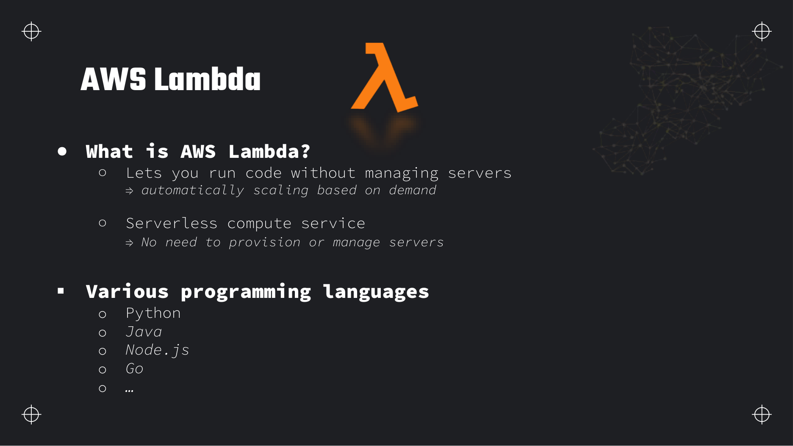
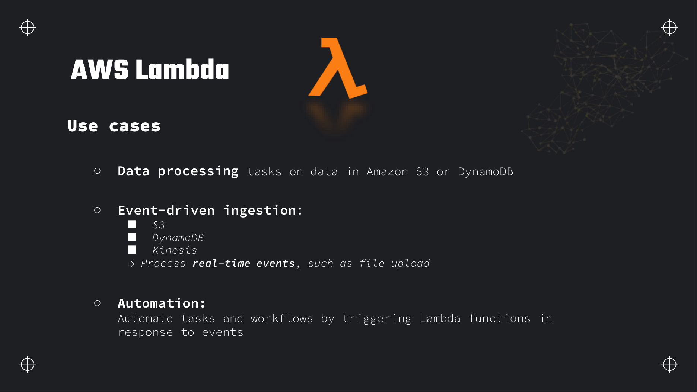
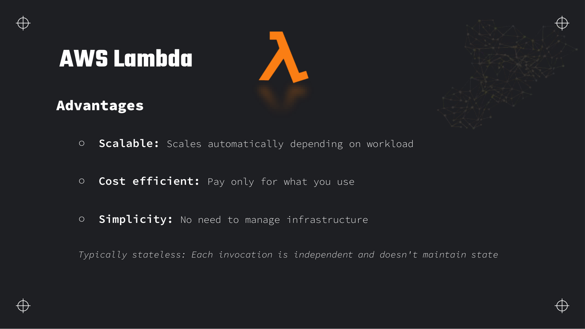
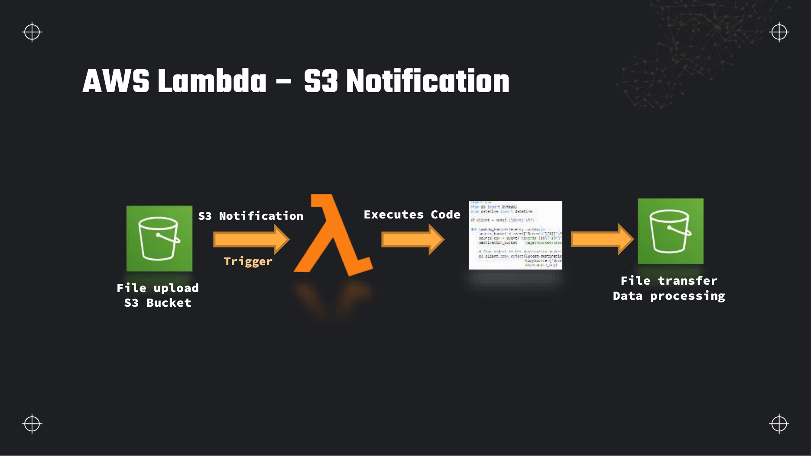
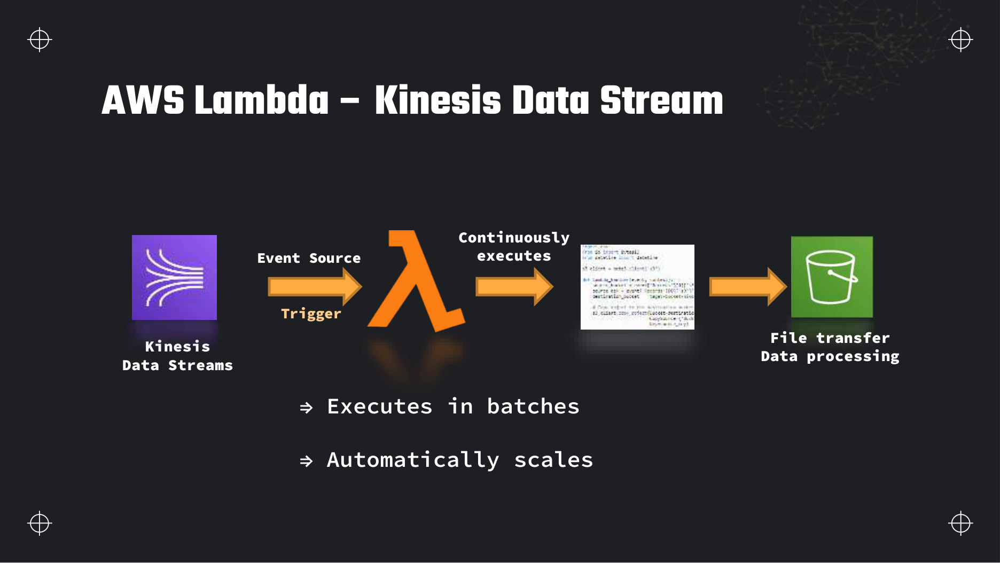
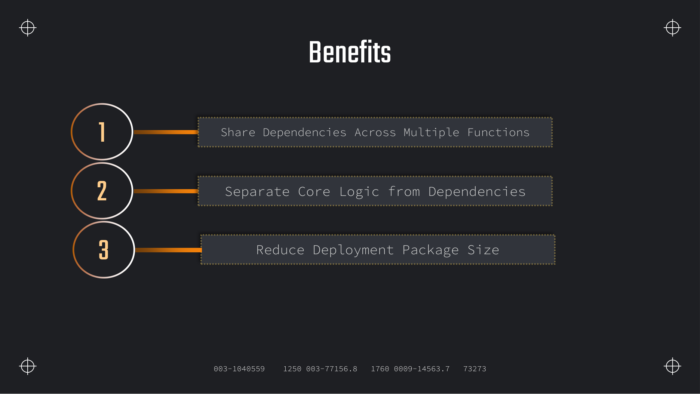
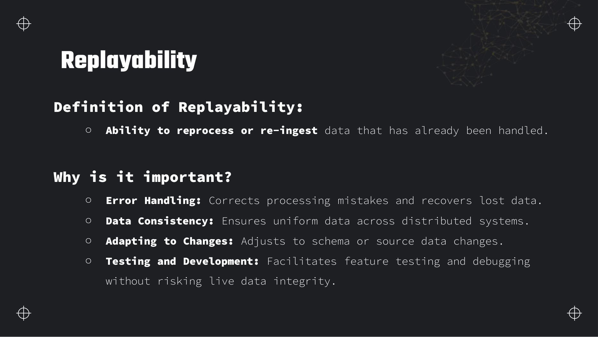
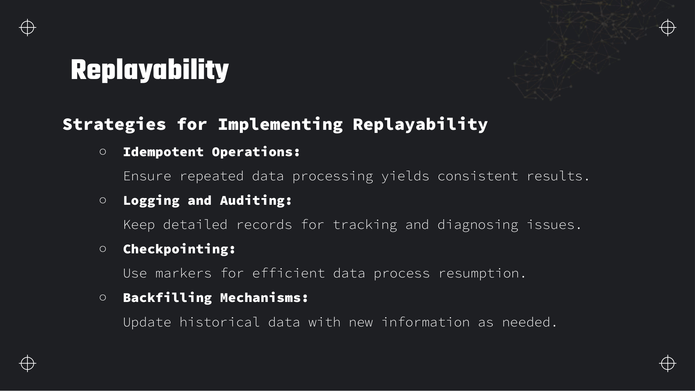
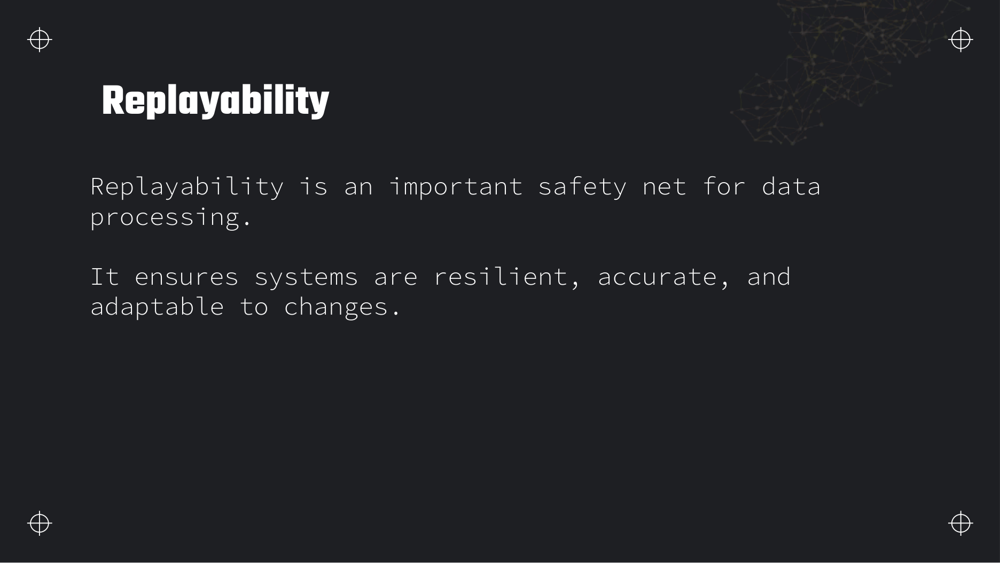

Lectures in this section
Each lecture links to the notes that cover it. Labs reuse bucket dea-lab-<initials>-<random> and prefix layout from Section 1.
- AWS Lambda overview, use cases and advantages ~6:00 Slides 69–72
- Lambda with S3 event notifications ~5:00 Slide 73
- Lambda with Kinesis Data Streams ~6:00 Slide 74
- Lambda Layers ~4:00 Slides 75–77
- Limits, invocation modes and when not to use Lambda ~7:00
- Replayability: retention, checkpointing and idempotent design ~8:00 Slides 78–81
AWS Lambda overview
AWS Lambda runs your code in response to events without you provisioning or patching servers. AWS scales concurrency automatically, bills per millisecond of execution and per request, and integrates natively with S3, Kinesis, DynamoDB, EventBridge and dozens of other services.



Invocation models
| Model | Who waits | Examples |
|---|---|---|
| Synchronous | Caller blocks until the handler returns | API Gateway, direct Invoke, ALB |
| Asynchronous | Lambda queues the event and returns 202; retries on failure | S3 notifications, SNS, EventBridge |
| Poll-based (stream) | Lambda service polls the source and invokes in batches | Kinesis, DynamoDB Streams, MSK, SQS |
S3 → Lambda is asynchronous. Kinesis → Lambda is poll-based with an event source mapping. The retry and failure semantics differ — covered below.
Lambda with S3 event notifications
Configure an S3 bucket to publish events (object created, deleted, restored) to Lambda. When a file lands under a prefix, Lambda runs your handler — typical pattern: validate, virus-scan, copy to staging/, or kick off a Glue workflow.

S3 ObjectCreated → Lambda → staging copy
S3 notification configuration (JSON)
{
"LambdaFunctionConfigurations": [
{
"Id": "raw-upload-trigger",
"LambdaFunctionArn": "arn:aws:lambda:us-east-1:123456789012:function:dea-s3-staging-copy",
"Events": ["s3:ObjectCreated:*"],
"Filter": {
"Key": {
"FilterRules": [
{ "Name": "prefix", "Value": "raw/" },
{ "Name": "suffix", "Value": ".csv" }
]
}
}
}
]
}Handler: read key and copy to staging
import boto3
import urllib.parse
s3 = boto3.client("s3")
DEST_BUCKET = "dea-lab-ab-4821"
STAGING_PREFIX = "staging/"
def lambda_handler(event, context):
for record in event["Records"]:
src_bucket = record["s3"]["bucket"]["name"]
# Keys arrive URL-encoded
src_key = urllib.parse.unquote_plus(
record["s3"]["object"]["key"], encoding="utf-8"
)
dest_key = STAGING_PREFIX + src_key.removeprefix("raw/")
print(f"Copy s3://{src_bucket}/{src_key} -> s3://{DEST_BUCKET}/{dest_key}")
s3.copy_object(
Bucket=DEST_BUCKET,
Key=dest_key,
CopySource={"Bucket": src_bucket, "Key": src_key},
)
return {"statusCode": 200, "copied": len(event["Records"])}Example S3 event payload
{
"Records": [
{
"eventVersion": "2.1",
"eventSource": "aws:s3",
"eventName": "ObjectCreated:Put",
"s3": {
"bucket": { "name": "dea-lab-ab-4821" },
"object": { "key": "raw/customers/customers.csv", "size": 818 }
}
}
]
}Asynchronous invokes retry twice by default on error, then optionally route to a dead-letter queue (SQS or SNS). Set MaximumRetryAttempts (0–2) on the event invoke config.
Lambda with Kinesis Data Streams
An event source mapping makes Lambda poll a Kinesis stream, batch records, and invoke your function. Concurrency scales with shard count (one concurrent consumer per shard by default, more with parallelisation factor).

Event source mapping knobs
| Setting | Kinesis / DynamoDB Streams | Effect |
|---|---|---|
| Batch size | 1–10,000 records (Kinesis) | Records per invocation |
| Batching window | 0–300 seconds | Wait up to N seconds to fill a batch |
| Parallelisation factor | 1–10 per shard | Multiple concurrent invokes per shard |
| Starting position | LATEST or TRIM_HORIZON | New records only vs oldest retained |
| On-failure destination | SQS or SNS | After retries exhausted, send failed batch metadata |
| Bisect batch on function error | true/false | Split failing batch to isolate poison pill |
| Maximum retry attempts | 0–10,000 (0 = discard) | Retries before on-failure destination |
Handler with partial batch failure reporting
import base64
import json
def lambda_handler(event, context):
failures = []
for record in event["Records"]:
seq = record["kinesis"]["sequenceNumber"]
try:
payload = json.loads(
base64.b64decode(record["kinesis"]["data"]).decode("utf-8")
)
process_record(payload) # your transform / write
except Exception:
failures.append({"itemIdentifier": seq})
return {"batchItemFailures": failures}
def process_record(payload):
# Idempotent write keyed on event id
if not payload.get("order_id"):
raise ValueError("missing order_id")Example Kinesis event payload
{
"Records": [
{
"eventSource": "aws:kinesis",
"eventName": "aws:kinesis:record",
"kinesis": {
"partitionKey": "customer-42",
"sequenceNumber": "49618115137593273885046144569272806707467268471106562518560",
"data": "eyJvcmRlcl9pZCI6ICIxMDAxIiwgImFtb3VudCI6IDQ5Ljk5fQ==",
"approximateArrivalTimestamp": 1722614400.0
}
}
]
}The decoded data above is {"order_id": "1001", "amount": 49.99}.
BisectBatchOnFunctionError and ReportBatchItemFailures so one bad record does not block the shard forever. After max retries, route to on-failure SQS for manual replay.Lambda Layers
A Lambda layer is a zip archive of libraries, custom runtimes or static assets that you attach to a function. Layers deploy separately from handler code and can be shared across functions in the account or published publicly.

/opt in the execution environment.- Up to 5 layers per function; total unzipped function + layers must stay within the deployment size limit.
- Build layers with the same runtime OS as Lambda (Amazon Linux 2023 for Python 3.12).
- Common pattern: one layer for
pandas/pyarrow, another for internal shared utilities.
Limits, performance and when not to use Lambda
Lambda's limits define the exam boundary between "short event-driven transform" and "that belongs in Glue or EMR". Memory controls CPU proportionally; cold starts matter for latency-sensitive paths.
Current limits (know these for the exam)
| Resource | Limit |
|---|---|
| Timeout | 15 minutes max |
| Memory | 128 MB – 10,240 MB (10 GB) |
Ephemeral storage (/tmp) | 512 MB – 10,240 MB (10 GB), configurable |
| Payload (sync invoke) | 6 MB request/response |
| Payload (async invoke) | 256 KB event body |
| Deployment package (zipped) | 50 MB direct upload; 250 MB unzipped (with layers) |
| Container image | 10 GB image size |
| Layers per function | 5 |
| Account concurrency (default) | 1,000 concurrent executions (soft limit, request increase) |
Memory buys CPU
At 1,769 MB a function gets one full vCPU; above that, multiple vCPUs. Power tuning: increase memory until duration drops enough that total cost falls — the Lambda Power Tuning tool automates this. For CSV parsing and boto3 calls, 512 MB–1 GB is usually enough; numpy-heavy work may need more.
Cold starts, provisioned concurrency and SnapStart
- Cold start — first invoke or after scale-out must init the runtime and import modules. Java and .NET suffer most; Python moderate.
- Provisioned concurrency — keep N execution environments warm; you pay for the pre-warmed capacity whether or not invocations occur. Use when p99 latency matters.
- SnapStart — Java functions only; snapshots initialized execution environment for faster cold starts. Not available for Python data pipelines today.
Lambda in a VPC
Attach a function to private subnets to reach RDS, ElastiCache or internal APIs. Lambda creates ENIs in your subnets — needs ec2:CreateNetworkInterface on the role, a security group allowing outbound to the target, and usually an S3/DynamoDB VPC gateway or interface endpoint so the function can still reach AWS APIs without a NAT Gateway. Cold starts are slower with VPC because of ENI setup (mitigated on newer runtimes with hyperplane ENIs).
When Lambda is the wrong answer
| Requirement | Use instead | Why |
|---|---|---|
| ETL > 15 minutes or TB-scale Spark joins | AWS Glue or EMR | Lambda timeout and single-node memory ceiling |
| Heavy distributed Spark / Hadoop | EMR or Glue Spark | Lambda has no Spark cluster |
| Sustained high-throughput stream analytics with windows | Managed Flink, Spark Structured Streaming | Lambda batch window max 5 minutes on Kinesis; stateful windows are awkward |
| Always-on HTTP API with steady load | ECS/Fargate, App Runner | Provisioned concurrency cost at constant QPS |
Replayability
Replayability is the ability to reprocess data that was already ingested — deliberately, because a transform bug shipped, schema changed, or a downstream store was wiped. It is a core Domain 1 topic: the exam expects you to design pipelines where bad code can be fixed and run again without corrupting production data.



Source retention — where replay comes from
| Source | Retention / replay | Notes |
|---|---|---|
| Kinesis Data Streams | 24 hours default; up to 365 days extended | Reset shard iterator or new consumer with TRIM_HORIZON replays within window |
| Amazon MSK / Kafka | Unlimited (disk-bound, topic retention policy) | Reset consumer group offset to earliest |
| Amazon S3 | Durable until deleted | Best replay source — keep raw/ immutable; re-run Glue/Lambda on prefix |
| Kinesis Data Firehose | No replay | Forward-only delivery to S3/Redshift/OpenSearch; source stream retention is your safety net |
| DynamoDB Streams | 24 hours | Replay via PITR export or source table scan, not the stream itself |
Checkpointing and shard iterators
Poll-based consumers (Lambda, KCL, Flink) commit a checkpoint — sequence number or offset — when a batch succeeds. On failure, the consumer restarts from the last checkpoint, which may re-deliver records (at-least-once). Design writes to tolerate duplicates.
- Lambda stores Kinesis checkpoints in DynamoDB (managed automatically per event source mapping).
- To replay: disable mapping, reset iterator to
AT_TIMESTAMPorTRIM_HORIZON, or deploy a new consumer group. - Glue streaming uses Spark checkpoint directories on S3; Glue batch uses job bookmarks (Section 4).
Idempotent writes
Replay only works if reprocessing does not double-count. Techniques:
- Natural keys with
MERGE/ conditional DynamoDBPutItem(attribute_not_exists). - Deterministic S3 paths:
curated/orders/date=2024-01-01/part-000.parquetoverwritten on re-run. - Store processed event IDs in DynamoDB with TTL for dedup window.
Dead-letter handling and replay pipeline
Failed batches land in an on-failure SQS queue or DLQ with the original payload metadata. A separate "replayer" Lambda or scheduled Glue job drains the DLQ, fixes the root cause, and re-submits. Logging to CloudWatch Logs + S3 access logs gives audit trail for what was replayed when.
Design pattern: raw → staging → curated
Replay from immutable raw when a transform fails
Never edit raw/. When v2 of the transform is ready, truncate or overwrite affected partitions in curated/ and re-run the job against the full raw prefix. S3 versioning on raw adds accidental-delete protection. This pattern is the practical implementation of everything on slides 79–81.
Deeper detail and exam edge cases
Concurrency models, billing granularity, and poll-based failure semantics — the operational limits that turn a working Lambda demo into a production pipeline that survives poison records and account-wide throttling.
Limits and quotas that decide answers
| Limit | Value | Adjustable? | Why it matters |
|---|---|---|---|
| Function timeout | 15 minutes max | Yes — set per function up to 900 s (hard ceiling) | Anything longer belongs in Glue or EMR; exam distractors often propose 30-minute Lambda ETL. |
| Memory | 128 MB – 10,240 MB | Yes — per function | CPU scales with memory; 1,769 MB ≈ one vCPU; above that, multiple vCPUs. |
Ephemeral storage (/tmp) | 512 MB – 10,240 MB default 512 MB | Yes — configurable independently of memory | Large CSV staging in /tmp without raising memory wastes GB-second cost; raising /tmp alone does not add CPU. |
| Sync invoke payload | 6 MB request and response | No (hard) | API Gateway and direct invoke hit this before your handler runs. |
| Async invoke event | 256 KB | No (hard) | S3 notifications are lightweight; stuffing large metadata in the event body fails at enqueue time. |
| Deployment package (zipped direct upload) | 50 MB | No (hard) — use S3 upload for larger zips | Layers help but combined unzipped total still capped. |
| Deployment package (unzipped, with layers) | 250 MB total | No (hard) | Heavy Python data stacks often need container images instead. |
| Container image | 10 GB | No (hard) | Bypasses zip limits; cold starts depend on image size and layer caching. |
| Layers per function | 5 | No (hard) | Consolidate dependencies into fewer layers or switch to a container image. |
| Account concurrent executions (default) | 1,000 | Yes — soft quota; Service Quotas increase request | All functions in the Region share the pool unless reserved concurrency is set. |
| Reserved concurrency | 0 – account unreserved pool per function | Yes — caps and reserves capacity for one function | Guarantees minimum capacity but subtracts from the shared pool; setting 0 disables invokes. |
| Provisioned concurrency | Per function, per Region | Yes — pre-warmed execution environments | Eliminates cold starts for that alias/version; bills even when idle — see cost table below. |
| Kinesis / DynamoDB Streams batch size | 1 – 10,000 records (Kinesis); up to 10,000 (DynamoDB Streams) | Yes — event source mapping | Larger batches improve throughput but lengthen poison-pill blast radius without bisect/partial failure. |
| Batching window | 0 – 300 seconds | Yes — event source mapping | Wait to fill a batch; trades latency for fewer invokes. |
| SQS batch size | 1 – 10,000 (standard); max 10 for FIFO | Yes — event source mapping | Pair with ReportBatchItemFailures so one bad message does not re-drive the whole batch. |
| Maximum retry attempts (stream mappings) | 0 – 10,000 (0 = discard after failure handling) | Yes — separate from async invoke retries | With 0, failed batches go straight to on-failure destination after bisect exhausts. |
| Billing granularity | 1 ms | No (hard) | Sub-100 ms invocations still round up to 1 ms — memory tuning changes GB-seconds quickly. |
What you actually pay for
| Billed dimension | Unit | How to spend less |
|---|---|---|
| Invoke requests | Per million requests (us-east-1: ~0.20 USD per 1M) | Batch Kinesis/SQS records; increase batching window; avoid synchronous invoke loops when async suffices. |
| Duration (GB-seconds) | Memory allocated × duration in seconds, 1 ms granularity | Power-tune memory — more RAM often shortens CPU-bound work enough to lower total GB-seconds. |
| Provisioned concurrency | GB-second for pre-warmed capacity plus per-request charge while provisioned | Use only on latency-critical aliases; scale to zero off-peak; prefer reserved concurrency if you only need a cap, not warm starts. |
| NAT Gateway (VPC-attached functions) | Per hour plus per GB processed | Add S3/DynamoDB gateway or interface VPC endpoints so AWS API calls skip NAT. |
| ENI data transfer (VPC) | Cross-AZ traffic between Lambda ENIs and private resources | Place function subnets in the same AZ as RDS when possible; use VPC endpoints for same-Region S3. |
| CloudWatch Logs | Ingestion and storage per GB | Sample debug logging; set log retention; avoid logging full payloads on hot paths. |
| KMS (encrypted env vars / SNS / SQS with CMK) | Per API request | Use AWS-managed keys where compliance allows; batch decrypt at init not per record. |
| Idle provisioned concurrency | Full provisioned GB-second rate 24×7 | Anti-pattern: provisioned concurrency on a sporadic S3 trigger — you pay for warm instances that rarely run. |
GetObject through a NAT Gateway. Both bill continuously while adding little throughput.TooManyRequestsException (429). Reserved concurrency on one function can starve others — size the pool before production cutover.Traps that catch people
- Poison pill blocks the shard — On Kinesis or DynamoDB Streams, one record that always throws prevents checkpoint advancement for that shard until the record ages out of retention (24 hours on DynamoDB Streams). Without
BisectBatchOnFunctionError,MaximumRetryAttempts, or on-failure destination, the entire shard stalls while iterator age climbs. - Reserved vs provisioned concurrency — Reserved concurrency only caps and reserves capacity; it does not pre-warm execution environments. Cold starts remain unless you add provisioned concurrency on a published alias.
- SQS partial batch uses messageId —
ReportBatchItemFailuresfor SQS returnsitemIdentifieras the SQS message ID, not the Kinesis sequence number. Copying a Kinesis handler verbatim silently fails partial retries. - Async invoke retries ≠ stream mapping retries — S3 → Lambda async retries twice by default (0–2 configurable). Kinesis mappings use a separate retry counter (up to 10,000) and bisect logic — mixing the two models in runbooks causes wrong recovery steps.
- VPC Lambda without endpoints — Functions in private subnets cannot reach S3, DynamoDB, or Kinesis public endpoints without a NAT Gateway or VPC endpoint. Symptom: timeouts on
boto3calls despite correct IAM — network, not permissions. - At-least-once duplicates — Successful processing followed by a crash before checkpoint commits re-delivers the batch. Idempotency keys are mandatory for aggregations writing to S3 or DynamoDB, not optional polish.
- Large deployment package cold starts — Importing pandas, numpy, or JDBC drivers on every cold start dominates duration. Layers reduce upload size but imports still run; container images or provisioned concurrency address latency, not zip size alone.
- Setting reserved concurrency to zero — Reserved concurrency of 0 on a function blocks all invokes — useful as a circuit breaker but often mis-clicked when trying to "remove limit".
- Firehose transform timeout vs Lambda limit — Firehose allows up to six minutes per transform batch, but the same function code deployed as a Kinesis consumer still hits the 15-minute function maximum — different triggers, same handler, different effective limits.
Troubleshooting playbook
| Symptom | Most likely cause | What to check / fix |
|---|---|---|
IteratorAge / MillisBehindLatest climbing on Kinesis trigger | Handler slower than ingest, or poison record blocking shard | CloudWatch IteratorAge on the event source mapping; enable bisect and partial batch failure; check function Errors and Duration metrics. |
TooManyRequestsException (429) on invoke | Account or function concurrency exhausted | CloudWatch ConcurrentExecutions vs account limit; review reserved concurrency allocations; request quota increase or reduce fan-out. |
| S3 trigger fires but handler times out | Object too large for memory//tmp or 15-minute ceiling | Check object size in the event; raise memory (adds CPU and /tmp indirectly) or route large files to Glue; use S3 → SQS → Lambda for backpressure. |
VPC function times out on s3.get_object | No route to S3 — missing NAT or gateway endpoint | Verify VPC endpoints for S3 or NAT in route table; security group egress on 443; compare with same code outside VPC. |
| Duplicate rows after deploy | At-least-once redelivery after checkpoint lag | Audit idempotency keys; confirm checkpoint after successful sink write; check OnSuccess destination metrics if configured. |
| SQS trigger reprocesses entire batch | ReportBatchItemFailures not enabled or wrong itemIdentifier | Event source mapping → Report batch item failures = on; return failed message IDs only in batchItemFailures. |
| Cold start p99 spikes after release | New dependency imports or larger package | Compare InitDuration in CloudWatch Logs REPORT lines; use provisioned concurrency on stable alias; trim imports. |
| On-failure queue empty but shard still blocked | Retries not exhausted or bisect disabled | Review MaximumRetryAttempts and MaximumRecordAgeInSeconds; enable on-failure SQS destination; discard aged records if business allows. |
Production patterns
Production ingest rarely wires S3 directly to Lambda without a buffer. The durable pattern is S3 → EventBridge or SQS → Lambda: SQS absorbs burst uploads, provides a DLQ, and supports partial batch failure without losing the whole notification batch. For streams, set event source mappings with a moderate batch size (100–500), a short batching window (1–5 s), ReportBatchItemFailures, bisect on error, and an on-failure SQS queue inspected by an alarm.
Stream consumer sizing
- One concurrent execution per shard by default; use parallelisation factor only when handler is idempotent and CPU-bound.
- Reserved concurrency = shard count guarantees capacity; add provisioned concurrency only on latency-sensitive paths.
- On-failure destination holds batch metadata for manual replay — pair with idempotent sinks.
Anti-pattern
Monolithic Lambda that reads an entire multi-GB S3 object into memory, transforms, and writes curated output. Hits memory, /tmp, and timeout limits under real data volumes. Glue Spark or S3 Select plus Step Functions handles this scale.
Buffered S3 ingest with partial failure handling
aws lambda update-event-source-mapping \
--uuid esm-abc123 \
--function-response-types ReportBatchItemFailures
# Handler must return: {"batchItemFailures": [{"itemIdentifier": "<messageId>"}]}Where this fits with the rest of the exam
Lambda is the default short, event-driven compute layer in Domain 1. It sits between ingestion sources and durable stores — almost always paired with services from other sections.
- Section 6 — Data Streaming — Kinesis event source mappings, iterator lag, and Firehose transform contracts; Lambda is a consumer, not a replacement for Flink windowing.
- Section 7 — S3 — event notifications, prefix layout, and idempotent copy keys for raw → staging triggers.
- Section 4 — Glue — when file size or transform duration exceeds Lambda limits; job bookmarks for batch replay.
- Section 15 — EventBridge — richer routing, filtering, and archive/replay compared with direct S3 → Lambda.
- Section 19 — VPC endpoints — required networking for VPC-attached functions reaching S3 and DynamoDB without NAT.
Interview questions
Answer each one out loud before opening it.
What is the difference between synchronous, asynchronous and poll-based Lambda invocation?Fundamentals
Synchronous — caller waits for the response (API Gateway, direct invoke). Errors return immediately to the caller; no automatic retry unless the client retries.
Asynchronous — Lambda queues the event (S3, SNS, EventBridge). Returns 202 immediately; Lambda retries up to two times on failure, then can send to DLQ.
Poll-based — Lambda polls Kinesis, DynamoDB Streams, SQS or MSK, batches records, invokes the handler, checkpoints on success. Retries and bisect-on-error apply per batch.
An S3 upload should trigger a Lambda that copies files to staging. What can go wrong and how do you harden it?Design
S3 notifications are at-least-once — duplicate invokes possible. Use deterministic destination keys so copy_object overwrites the same staging key. Filter by prefix/suffix so only intended uploads trigger.
Set async invoke DLQ or on-failure destination for poison events. Grant Lambda s3:GetObject on source and s3:PutObject on destination. Large files may exceed Lambda timeout — for multi-GB objects, trigger Glue instead.
How does Lambda scale with a Kinesis stream of 8 shards?Performance
By default one concurrent Lambda execution per shard processes records — up to 8 parallel invokes. Parallelisation factor (1–10) multiplies that per shard, up to account concurrency limits.
Increase batch size and batching window to improve throughput per invoke; enable ReportBatchItemFailures so partial batch retry does not reprocess successful records.
What are Lambda Layers for, and what are the limits?Fundamentals
Layers package shared dependencies (libraries, binaries, config) separately from handler code. Benefits: smaller uploads, one version shared across functions, separation of app logic and deps. Contents mount under /opt.
Max 5 layers per function. Combined unzipped function + layers ≤ 250 MB (50 MB zipped direct upload). Container images bypass zip limits up to 10 GB.
When would you choose Glue over Lambda for an S3-triggered CSV conversion?Comparison
Lambda when files are small (fit in memory//tmp), transform completes in minutes, and you want instant per-file triggers with minimal infrastructure.
Glue when files are large, need distributed Parquet conversion, partitioning, catalog updates, job bookmarks, or joins across sources. Glue also wins when the question emphasises "least operational overhead" for complex ETL despite longer startup.
Explain replayability and why Firehose makes it harder.Exam
Replayability = ability to reprocess historical data after bugs, schema changes or downstream loss. Requires durable source retention (S3 raw, Kinesis with long retention) plus idempotent transforms.
Firehose has no replay — it delivers forward to destinations. Recovery means re-reading the upstream Kinesis stream (within retention) or reprocessing from S3 if Firehose already landed raw copies. Exam distractor: "replay from Firehose" is wrong.
What is bisectBatchOnFunctionError and when do you enable it?Troubleshooting
When a Kinesis/DynamoDB batch invoke fails, Lambda can split the batch in half recursively until it isolates the single bad record — instead of retrying the entire batch forever.
Enable with ReportBatchItemFailures (partial batch response) for finer control, or bisect for automatic binary split. Pair with on-failure SQS for records that still fail after max retries.
How does increasing Lambda memory affect performance and cost?Cost
Memory and CPU scale together — more memory means more vCPU and often shorter duration. You pay for GB-seconds, so if duration halves when memory doubles, cost can stay flat or fall.
Power-tune for production. For exam questions: "function is CPU-bound parsing large JSON" → increase memory; "function is idle waiting on network" → memory may not help.
Design a replay strategy after a bad transform ran for three days on a Kinesis → Lambda → S3 pipeline.Design
1) Fix and deploy corrected Lambda. 2) If raw events still in Kinesis (within retention), reset consumer to AT_TIMESTAMP three days ago or create new event source mapping with TRIM_HORIZON. 3) If raw also lands on S3 (Firehose backup or separate writer), re-run against raw/ prefix.
4) Overwrite curated partitions idempotently. 5) Drain DLQ for records that failed during the bad period. 6) Add CloudWatch alarms on error rate to catch the next bad deploy early.
What changes when you run Lambda in a VPC?Architecture
Lambda creates ENIs in your subnets to reach private resources (RDS, internal APIs). You need subnet selection, security groups, and usually VPC endpoints for S3/DynamoDB to avoid NAT costs.
Cold starts were historically slower; modern hyperplane ENIs reduce penalty. IAM role needs EC2 network interface permissions. Without endpoints, public AWS API calls from a private subnet fail.
Hands-on practice
Free tier where possible. Delete everything at the end of each task.
-
Create a Lambda function that copies any new object from
Lambda → Create function → S3 triggerraw/tostaging/on upload. Configure the S3 event notification on your lab bucket.Uploading
raw/test/hello.csvcreatesstaging/test/hello.csvwithin seconds; CloudWatch Logs show the copy.Show stepsConsole + CLI
- Lambda → Create Python 3.12, name
dea-s3-staging-copy, paste handler from notes. - Execution role: add
s3:GetObject,s3:PutObjecton lab bucket. - Add trigger: S3, bucket, event type
PUT, prefixraw/. - Upload a test file; verify staging copy.
aws s3 cp data/customers.csv s3://dea-lab-ab-4821/raw/customers/customers.csv aws s3 ls s3://dea-lab-ab-4821/staging/customers/Cleanup: delete Lambda function and remove S3 notification; delete test objects.
- Lambda → Create Python 3.12, name
-
Create a Kinesis stream with one shard, send ten JSON records, and attach a Lambda consumer with batch size 5 and partial batch failure reporting enabled.
Kinesis → Data streams → Lambda → Add triggerCloudWatch shows two invocations (batch of 5 each); intentionally fail one record and confirm only it is retried.
Show stepsConsole
- Create stream
dea-lab-orders, 1 shard. - Deploy consumer with Kinesis template; enable Report batch item failures.
- Use Kinesis Data Generator or CLI
put-recordto send ten events. - Include one malformed payload to test
batchItemFailures.
aws kinesis put-record --stream-name dea-lab-orders \ --partition-key pk1 \ --data '{"order_id":"1001","amount":9.99}'Cleanup: delete event source mapping, Lambda, and Kinesis stream (no free tier beyond trial hours).
- Create stream
-
Publish a Lambda layer containing
Lambda → Layers → Create layerrequestsand attach it to your staging-copy function. Verify import in CloudWatch Logs.Function logs show successful
import requestswithout bundling it in the function zip.Show stepsCLI
- Build layer zip:
python -m pip install requests -t python/, zip the folder. aws lambda publish-layer-versioncompatible with python3.12.- Add layer to function configuration.
Cleanup: delete layer versions when done.
- Build layer zip:
-
Document a replay runbook for your lab bucket: list steps to reprocess all of
raw/customers/intocurated/after a hypothetical bad transform.Written steps cover disable trigger, fix job, delete bad curated prefix, reset Glue bookmark or re-run Lambda on prefix, validate row counts.
Show approachDesign
- Keep
raw/read-only (bucket policy deny delete). - Version transforms in Lambda alias or Glue job parameter.
- On failure: pause consumers → fix code →
aws s3 rm --recursive curated/customers/→ reset bookmark → full re-run → reconcile counts with Athena.
No AWS resources to delete; this is a documentation exercise tied to slides 79–81.
- Keep
Recap
- Lambda: serverless, event-driven, stateless handlers; sync vs async vs poll-based invocation.
- S3 → Lambda is async at-least-once; filter by prefix/suffix; idempotent copy keys.
- Kinesis → Lambda: event source mapping, batch size/window, parallelisation factor, partial batch failures.
- Layers: 5 max, share deps, mount at /opt; 50 MB zip / 250 MB unzipped deployment.
- Limits: 15-min timeout, 128 MB–10 GB memory, 6 MB sync / 256 KB async payload, 1,000 default concurrency.
- More memory = more CPU; provisioned concurrency kills cold starts; VPC needs endpoints/NAT.
- Long ETL / Spark → Glue or EMR, not Lambda.
- Replayability: Kinesis 24h–365d, MSK unlimited, S3 durable raw, Firehose no replay.
- Idempotent writes + checkpointing + DLQ/on-failure destination = resilient replay pipeline.